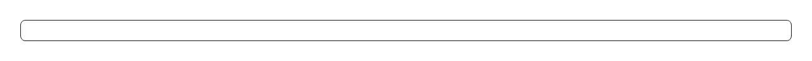

A read-only code panel: a bordered, scrollable box that shows a snippet with a copy button in the corner and an optional uppercase language label. Reach for it whenever a page has to show code the reader will copy rather than edit — install and CLI commands in a README, docs site or MDX page (Nextra, Docusaurus, Starlight, Storybook docs all render into exactly this shape), curl and SDK examples in API reference, a GraphQL or SQL query, a .env sample or YAML/JSON config, a Dockerfile or CI workflow fragment, a webhook payload, a stack trace pasted into a support article, the "run this in your terminal" step of an onboarding flow, the snippet a developer landing page opens with, and the code an AI assistant hands back inside a chat answer. Common asks it answers: "code block component react", "code snippet component", "code block with copy button", "copy code button react", "pre code with copy", "styled pre tag react", "terminal command block", "cli command component", "docs code sample component", "mdx code block component", "shadcn code block", "shadcn ui code snippet", "readonly code viewer", "snippet with language label", "copyable command block", "react-syntax-highlighter alternative", "code block without syntax highlighting". Official shadcn/ui has nothing here and is not close: across all sixty-three of its components there is not one <pre> element, not one clipboard call, and no code or snippet item of any kind — so this is normally rebuilt inline, and the inline version has three failures that all look fine on the way past. A copy button revealed only by group-hover cannot be reached by a keyboard at all; here it lives in a focus-within wrapper, so tabbing to it makes it appear. A copy that swaps its icon and stops there tells a screen reader nothing, because a changed icon is not an event; the copy control announces itself (it composes pulld copy-button rather than repeating it). And a scrollable panel with nothing focusable inside it is a region a keyboard user cannot scroll, so the right-hand end of a long line is mouse-only — the panel is a tab stop with a visible focus ring for that reason (WCAG 2.1.1). Deliberately a container and not a highlighter: pass a code string and it renders semantic <pre><code> with data-language set, which costs no bundle and stays out of the way if you later pipe the same string through Shiki, Prism, highlight.js or rehype-pretty-code — where react-syntax-highlighter drags a grammar bundle into a page that only wanted to display nine lines. Long lines scroll horizontally rather than wrapping, because a wrapped command is a command that gets pasted wrong. Within pulld the boundary is by what the string is, not how it looks: this one is for static text a human wrote, copy-field is the single-line value with the button docked inside it (an API key, a share link), ansi-log is for a process's own output with escape codes still in it (CI, build and deploy logs), and diff-view is for before and after rather than one snippet. Extra props land on the wrapper div, every colour is a shadcn token so it follows light and dark, and there is no dependency beyond your cn util.

Rendered on the shadcn default neutral palette with harness-generated props.
pnpm dlx shadcn@4.21.0 add @pulld/code-block
| licence | POINTER |
|---|---|
| primitive base | none |
| type | registry:ui |
| files | src/components/ui/code-block.tsx |
| npm deps pulled | none beyond the pre-installed peer set |
| registry deps | https://pulld.pages.dev/r/copy-button.json |
| semantic / palette / hex | 3 / 0 / 0 |
| writes shared ui/ | yes — can overwrite the project’s own primitives |